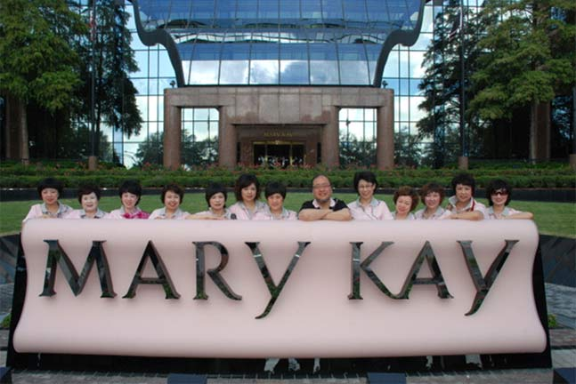

1971年，玫琳凯女士前往澳大利亚，庆祝玫琳凯公司首家海外子公司正式开业。正是在那里，她首次听到了《乘着银色的翅膀》这首诗，并被深深打动。1988年，公司以诗中所描绘的形象丏门铸造了一座雕塑，并将之树立于美国达拉斯的全球总部大楼的大堂中央，以纪念公司成立25周年。玫琳凯女士非常喜爱诗中的语句，经常在演讲和书信的结尾引用它们，以表达激励。

2006年，玫琳凯亚太生产中心在中国杭州落成。为了庆祝这一盛事，公司总部向玫琳凯（中国）化妆品有限公司赠送了一座同样的雕塑，安放于亚太生产中心的大堂中。它象征着所有的梦想都能实现，鼓舞每一位看到它的人们都能去追寻美好的梦想与人生。
On Silver Wings
乘着银色的翅膀
I have a premonition that soars on silver wings,
我相信终有一天， 你将乘着银色的翅膀展翅翱翔
It is a dream of your accomplishment
追逐远方的精彩
Of many wondrous things,
追寻远大的梦想，
I do not know beneath which sky
不知道你将飞向何方天空